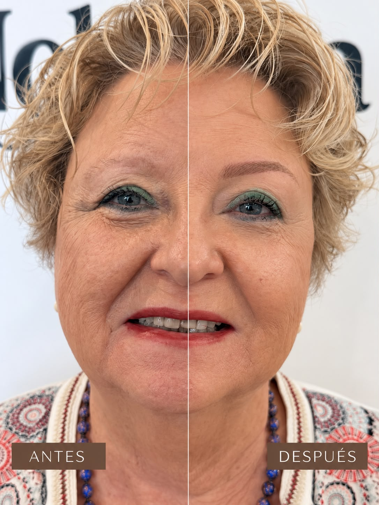

Micropigmentación de cejas en Granollers y Vallès Oriental: compara las técnicas
¿Buscabas laminado de cejas sin micropigmentación?Micropigmentación · Técnicas manuales y sombreado · Granollers
Realizamos microblading y nanoblading manuales, además de las opciones de Hair Stroke y Powder Brows. Diseñamos forma, técnica y pigmento después de valorar tu piel, tu pelo natural, posibles trabajos anteriores y el resultado que buscas. La micropigmentación de cejas cuesta 230 €. Si hay que corregir un trabajo antiguo, te damos presupuesto tras valorarlo.

Cejas naturales diseñadas para tu rostro
Una ceja hiperrealista no se consigue copiando una plantilla. Observamos proporciones, dirección del pelo, densidad, asimetrías y expresión para plantear un diseño que se integre con tu rostro.
Antes de comenzar dibujamos la propuesta. Puedes revisar forma y proporción y resolver dudas sobre la técnica, la evolución del pigmento, los cuidados y el mantenimiento.
Comparativa de técnicas
Microblading, nanoblading, Hair Stroke o Powder Brows
Valoración antes de reservar
Qué revisamos en tu primera consulta
- Piel, sensibilidad y estado actual de la zona.
- Cantidad, dirección y distribución del pelo natural.
- Asimetrías y proporciones del rostro.
- Trabajos anteriores, color y forma existentes.
- Resultado buscado y mantenimiento que puedes asumir.
¿Tienes un trabajo anterior?
Envíanos fotografías actuales, sin filtro y con luz natural. Un trabajo previo puede condicionar forma, color y técnica; no confirmaremos una propuesta definitiva sin valorarlo.
Enviar mis fotografíasCómo es el proceso
Servicio local · cita previa
Micropigmentación de cejas cerca de ti
Realizamos las valoraciones y los tratamientos en Nohuska Beauty Lab, Avinguda Sant Esteve, 40, 08402 Granollers. Atendemos a clientas de Granollers, Canovelles, Les Franqueses, La Roca, Cardedeu, La Garriga, Mollet y otros municipios del Vallès Oriental.
Si vienes desde otra localidad, puedes enviar primero fotografías para organizar la valoración. La técnica definitiva se confirma presencialmente. Si vienes desde más lejos, por ejemplo desde Mataró, Argentona, Sabadell, Santa Perpètua, Sant Celoni, Caldes de Montbui o Lliçà, escríbenos antes por WhatsApp: te orientamos sobre el tratamiento y organizamos la cita, que siempre se realiza en Granollers.
¿Quieres corregir un trabajo anterior?
La corrección no tiene una tarifa fija. En la valoración gratuita revisamos el pigmento, el tono y la forma antes de darte un presupuesto.
Trabajo propio · Publicación autorizada
Antes y después real de nanoblading de cejas

¿Buscas un acabado parecido? Primero revisamos tu piel, el pelo y cualquier pigmentación anterior. Pedir valoración gratuita de nanoblading.
Preguntas sobre microblading y micropigmentación de cejas
¿Realizáis microblading y nanoblading manuales?
Sí. En Nohuska realizamos microblading y nanoblading manuales. Antes de elegir valoramos piel, pelo, trabajos anteriores y el efecto que buscas. No todas las técnicas son adecuadas para todos los casos.
¿Qué diferencia hay entre microblading, nanoblading y Hair Stroke?
Microblading y nanoblading se ofrecen aquí como técnicas manuales. Hair Stroke es una propuesta de trazos que debe explicarse por su método concreto, sin equipararla automáticamente a las otras técnicas. «Pelo a pelo» describe un efecto visual: pregunta por la herramienta, el diseño y la evolución esperada en tu caso.
¿Qué diferencia hay entre Hair Stroke y Powder Brows?
Hair Stroke busca recrear visualmente trazos similares al pelo; Powder Brows crea un sombreado degradado. La piel, el pelo existente, los trabajos anteriores y el resultado deseado determinan qué técnica puede encajar.
¿Se pueden conseguir unas cejas naturales o hiperrealistas?
La naturalidad depende del diseño, la técnica, la piel, el pelo existente y la curación. Buscamos integrar el trabajo con tus rasgos, sin prometer un resultado idéntico en todas las personas.
¿Cuánto cuesta la micropigmentación de cejas?
La micropigmentación de cejas cuesta 230 €. El microblading y el nanoblading manuales cuestan 297 € cada uno, sin repaso incluido. La sesión inicial de nanoblading dura unas 2 horas. Si se trata de corregir una micropigmentación antigua, el precio se determina tras valorar el trabajo anterior.
¿Cómo evoluciona al curar?
El pigmento suele verse más intenso al principio y se suaviza durante la curación. La fijación y el tono final son individuales.
¿Dónde se realiza?
En Nohuska Beauty Lab, Avinguda Sant Esteve, 40, 08402 Granollers, con cita previa.
¿La valoración es gratuita?
Sí. Revisamos forma, piel, densidad, trabajos anteriores y el efecto que buscas antes de recomendar una técnica.
Más opciones para tus cejas
Una consulta por WhatsApp no confirma una reserva. Acordaremos contigo el tratamiento, la fecha y la hora.
Diseñemos tus cejas antes de elegir técnica
¿Quieres completar zonas o definir la forma? En la valoración gratuita comparamos las opciones de microblading, nanoblading manual, Hair Stroke y Powder Brows según tu piel, tu pelo y posibles trabajos anteriores. Te explicamos los cuidados y el presupuesto antes de decidir en Granollers.
Antes de confirmar la cita
Qué comparar en un presupuesto de microblading o micropigmentación
- La técnica concreta propuesta y por qué encaja con tu piel y tu pelo, no solo el nombre comercial.
- Si hay pigmento anterior, qué límites supone para la forma y el color nuevos.
- Qué incluye el importe: diseño, sesión, revisión y si un posible retoque se presupuesta por separado.
- Cómo se organizarán los cuidados y el seguimiento antes de fijar la fecha.
No confundas una revisión con un retoque incluido: confirma el alcance de tu propuesta antes de reservar. Si solo quieres ordenar o dar color al pelo existente sin pigmentar la piel, compara Natural Brow, laminado y tinte con la micropigmentación.